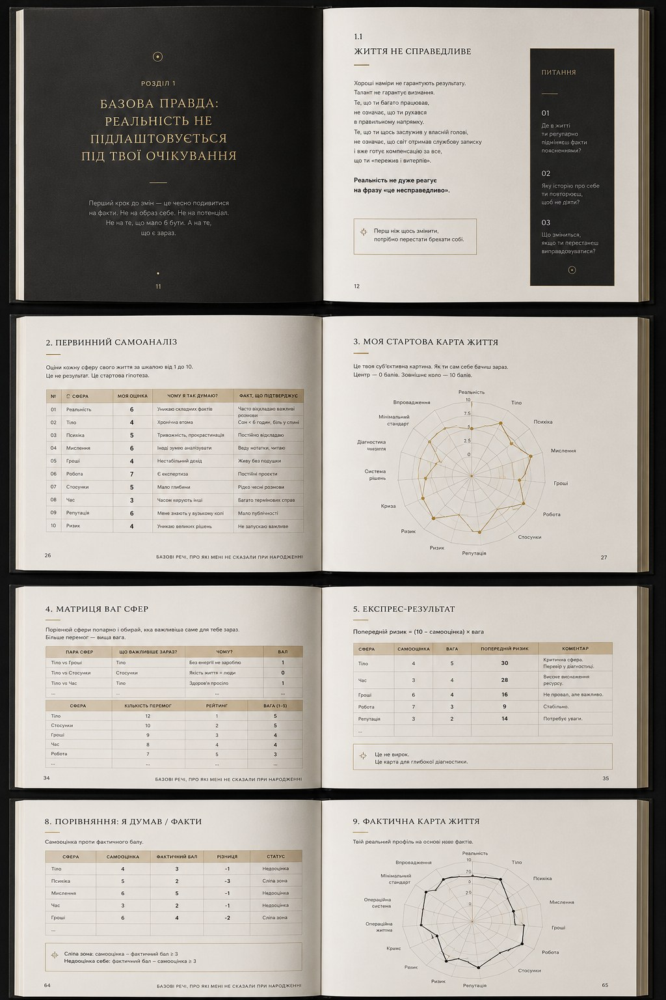

Premium printed edition · book and diagnostic volume of the Life Double Diagnosis Method + electronic materials
Accept reality. Realize your potential.
This is not a motivational book and not a journal for the “best version of yourself”. It is a manual for adult self-diagnosis that helps you see where the system of your life is slipping, what you keep calling normal and what price you pay for delayed decisions.
First limited print run of 100 copies
Hardcover binding
Diagnostic volume of the Life Double Diagnosis Method
Not wellness. Not coaching. Not a sweet illusion.
A book for those who no longer have enough patience for beautiful explanations.
When life starts slipping, it may seem that this is not a systemic problem. More often it seems that “this is just a difficult period”, “I need to hold on a little longer”, “I am just tired”, “I will deal with it later”. That is how years pass not through catastrophe, but through the absence of an honest audit.
“Basic Things” removes the decorative layer. The Life Double Diagnosis Method turns it into tables, matrices, scores, comparisons and a first step. Not for self-punishment. For managing reality.
Materiality
A solid black body, textured paper, gold foil stamping, a clean spine and a gift box. A book you want to hold in your hands.
Double diagnosis
First comes the subjective life map. Then comes the factual map. The difference between them shows not a mood, but a blind spot.
Method
Saw it. Wrote it down. Rated it. Compared it. Chose. Made the first move.
The weak logic of most “life tests” is that they give a beautiful picture without an operational decision. Here the logic is different: assessment must lead to choice, choice to action, and action to a reality check.
Open the interactive calculator →Map of areas
Body, psyche, thinking, money, work, relationships, time, reputation, risk and meaning. Not “balance”, but a system of supports.
Weight of areas
Not every problem has the same cost. What weighs the most right now must receive priority instead of remaining in the background.
Comparison with facts
Self-assessment without facts quickly becomes self-defence. The factual map restores solid ground under your feet.
72-hour plan
If there is no first move after diagnosis, it is not diagnosis. It is another way to postpone a decision.
Inside
Not text for text’s sake. Pages that force you to count reality.
The edition combines short chapters, control questions, self-analysis tables, weighted-area matrices and maps of factual condition. The task is not to make the reader feel more pleasant. The task is to make things clearer.

Book
Basic principles that do not adapt to your expectations.
Diagnostic volume
The Double Diagnosis Method, tables, matrices and control questions.
Digital access
PDF materials, the Self-Deception Calculator and future updates of electronic products.
First print run
Numbered certificate and a limited batch for early readers.
For whom
This is not a book for people looking for comfort.
For people who carry a lot and already suspect that the price has become too high.
For those who confuse busyness with forward movement and want to check it without self-deception.
For readers who need structure, not another dose of inspiration.
For those who want to leave reaction mode and regain manageability over their own life.
Pre-order
The print run is limited.
Not because of artificial hype. This edition is for conscious reading, honest self-diagnosis and work with one’s own life.
Book + diagnostic volume + premium set
Information about pricing and purchase terms can be requested
by email at
manual@belyakovconsult.com
or via Telegram.
Questions
Answers to the main questions.
Where can I buy the book?
The electronic version of the book and workbook will be available through online platforms after the official launch. The printed premium version will be available for order through this website after pre-orders open. Before sales start, you can leave your contact to receive the PDF preview, updates on the print run and be among the first to know about the launch.
What is included in the premium edition?
The premium edition is conceived as a complete set: the book, the double diagnosis volume, printed diagnostic materials, access to digital tools, PDF materials and the Self-Deception Calculator. The gift format may also include a box, ribbon marker, pen, first-edition certificate and other elements that strengthen the tactile experience.
How is this book different from motivational books?
This is not a book about inspiration, positive thinking or the “best version of yourself”. It is built as a tool for sober self-diagnosis: to see where life is slipping, which problems repeat, what has long become normal and what price a person pays for delayed decisions.
Who is this book for?
For people who carry a lot, work, make decisions and may look functional from the outside, but already feel that the price of this mode has become too high. This book is for those who need structure, an honest audit and a first concrete step, not another dose of inspiration.
Who is this book not for?
It is not for those looking for soft reassurance, beautiful affirmations or a quick feeling that “everything will be fine”. If a person is not ready to look at facts, acknowledge weak points and make at least one concrete step, this book will become just an expensive object on a shelf.
Why a separate Self-Deception Calculator?
The calculator works as a short diagnostic before the full diagnostic volume of life diagnosis. A person rates 10 areas of life, sees the weakest points, receives a result type, the main pattern of self-deception and a first step for 72 hours. It is not a medical or psychological diagnosis, but an author’s self-analysis tool.
Does the book replace a psychologist, doctor or financial consultant?
No. The book, workbook and calculator do not replace consultation with a doctor, psychologist, psychotherapist, financial or legal specialist. They are tools for self-analysis, structuring thoughts, decisions and life areas. If there are serious medical, psychological, financial or legal problems, a relevant specialist should be consulted.
What result should I expect after completing the double diagnosis?
The main result is not a good mood, but a clearer map of your own life. What holds. What is slipping. Where self-deception is present. Which area pulls others down. What the hidden price of inaction is. And what should be done first to regain control.
Will there be an electronic version?
Yes, the electronic version or PDF materials will be part of the product. But the project is not limited to a PDF. Its strength is in combining the book, workbook, digital tools and a physical premium experience.
Will there be an English or German version?
Yes, the project is designed as multilingual. The Ukrainian version is the base for testing the product, audience, positioning and price. The English and German versions should not be mechanical translations, but full adaptations for the respective markets.
When will pre-orders open?
Pre-orders will open after the printed layout, test copy, set composition and cost calculation are finalized. Until then, you can leave your contact to receive updates, the PDF preview and be among the first to know about the start of sales.
Can the book be bought as a gift?
Yes. The premium format is exactly what makes it suitable as a gift. But this is not a “nice inspirational book”. It is a gift for someone who is ready to look at themselves like an adult. It should not be given to everyone, but to people who will not be offended by honesty.
Socials
Follow the development of the project on social media
Social media is not an add-on to the book, but a living part of the project. There will be pre-order updates, fragments from the book and diagnostic volume, behind-the-scenes production of the printed edition, PDF materials, digital materials, a chatbot, applications, launch announcements and direct contact with the audience. If the book is the assembled system, social media is the place where that system unfolds in real time through thoughts, observations, examples, questions and honest conversations.